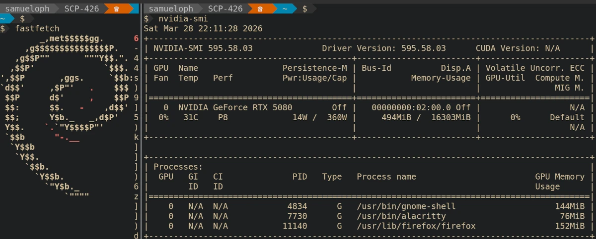

Latest NVIDIA Drivers for Debian (Packaged with AI)
Samuel Henrique (samueloph) March 29, 2026 [debian, nvidia, ai]
tl;dr
This is not an official package, it's good enough for me and it might be good enough for you, confirmed as working in Debian Testing but I don't have a Stable machine to test there.
You can use my custom repo to install the latest NVIDIA drivers on Debian Stable, Testing or Unstable (install from Sid repository):
https://deb.debusine.debian.net/debian/r-samueloph-nvidia-ai/
The page above contains the APT sources you need, just add the one for your
release to /etc/apt/sources.list.d/r-samueloph-nvidia-ai.sources, run sudo apt update and install the packages, you might need to disable Secure Boot.
This is not about AI
Discussions about AI are quite divisive in the Free Software communities, and there's so much to be said about it that I'm not willing to go into in this blog post. This is rather just me telling people that if they need up-to-date NVIDIA packages for Debian, they could check if my custom repository gets the job done.
The AI part is a means to an end, I've been careful to note in the repository names that the packages were produced with AI to respect people who do not want to run it for any reason.
RTX 5000 series support
Back in May 2025 I opened a bug report asking for the NVIDIA drivers on Debian to be updated to support the RTX 5000 series. The Nouveau drivers might be good enough for some people, but I need the NVIDIA drivers because I want to play games and do experiments with open weight models.
Opening a bug report doesn't guarantee anything, at the end of the day Debian Developers are volunteers, so if I really wanted the newer drivers, I would have to do something about it, ideally submitting a merge request.
I briefly looked into the NVIDIA packaging, which involves 3 source packages (and one extra git repo for tarballs), unfortunately this was going to take more time and effort than what I was willing to spend.
What I Did
After a few weeks of lamenting that I wasn't running the NVIDIA drivers, I figured I was willing to put in more effort than I originally thought, just enough to instruct the Claude Code agent to package the latest releases. I'm skilled enough with agentic tools that I knew how to use it to save time; providing a clear instruction on how to build the package and explaining the packaging layout, then letting the agent iterate until it gets a working build. The agent was running inside a VM that didn't have any of my credentials.
After a little bit of back and forth, where I was reviewing the changes guiding the agent into how to fix certain issues, I ended up with a working set of packages.
Once I installed it on my machine and confirmed they worked, I set up a debusine repository to make it easier to install future updates, and let others test it out.
Debusine is analogous to Ubuntu's famous PPA, or Fedora's EPEL, it's a relatively new project but it has been working fine for this.
Matheus Polkorny helped me test the packages and did spot a few issues which are fixed now. The Debusine developers were also always quick to respond to my questions and bug reports.
How Good Is It?
Short answer: good enough for daily use, but not a substitute for an official Debian package.
The whole point of doing this is because I don't have enough free time to maintain the package myself. All of this work was done as a volunteer, on my personal time.
This means I'm trusting the agent to some degree; I review its commits but I don't go too deep into it, the quality will be dictated by the fact that I'm a Debian Developer and so by how easily I can spot issues without double checking everything.
I only have a single machine with an NVIDIA GPU, this machine runs Debian Testing and so I don't have a way to test the Stable packages. I can do my best to address problems but at this point there is a risk that new updates break something.
Installing NVIDIA drivers has always been a bit risky regardless, if you're comfortable with reverting updates and handling a system without a graphical interface (in case you end up in a tty), you will be fine.
You will likely need to disable Secure Boot in order to use them, or set up your BIOS so that a MOK can be used to sign the DKMS modules.
When choosing the version strings for the packages, I was careful enough to pick something that would sort lower than an official Debian package, meaning that whenever that same version is packaged in Debian, your system will see it as an upgrade.
If you have any other methods of installing the NVIDIA drivers on your Debian system that is working for you, you should likely stick to that.
I have a strong preference for installing them through .deb packages, making the package sort out configuration changes and dependency updates, besides handling the DKMS modules.
Ultimately I'm not happy with the amount of difficulty that Debian users have in installing up-to-date NVIDIA drivers, and I hope this makes it easier for some.
How To Install
Head over to the Debusine page that contains both repos for Trixie (Debian Stable) and Sid (for Debian Testing and Unstable):
https://deb.debusine.debian.net/debian/r-samueloph-nvidia-ai/
If you are running Debian Testing, then pick the Sid repository.
That page contains the contents of the apt .sources file you need, create the
file /etc/apt/sources.list.d/r-samueloph-nvidia-ai.sources with the sources for your release.
Run sudo apt update and install the packages you need, if you already have a
previous version installed, sudo apt upgrade --update would update them.
If there are no upgrades, meaning you don't have a previous version installed, then you need to explicitly install them.
sudo apt install nvidia-open-kernel-dkms nvidia-driverIf you run into issues in Debian Stable, consider using the Linux kernel package from the backports repository, if you need an up-to-date NVIDIA driver, you likely should also be running the backports kernel package (if you can't upgrade to Debian Testing).
Future Plans
I currently have no means of measuring how many people are using the debusine repositories, so if you do end up using it feel free to let me know somehow.
I don't know for how long I will keep managing this repository, and how much effort I will spend, but my machine needs it and for now I will keep it up-to-date with the latest production-grade NVIDIA drivers.
Sources
The sources of the packages are available under a namespace in Salsa (Debian's GitLab instance):
https://salsa.debian.org/samueloph-forks-team/nvidia-drivers-forks-with-ai
You can also get the exact sources used in the repositories from debusine: